La casa de las patitas - Tienda de animales


La tienda de animales está dirigida por Patricia y su hija Bridget. Es la tienda de animales local de Olive Town. La tienda venderá kits de cría para sus animales de granja a 3000G una vez que su habilidad de cuidado de animales alcance el nivel 5 o superior. En esta tienda podras comprar animales para tu granja y tambien comprar mascotas y monturas.
| Horas | 8:00 am - 6:00 pm. |
|---|---|
| Cerrado | Martes y dias festivos. |
| Residentes | Patricia, Georg, Bridget y Damon. |
| Dirigido por |
|
Animales
En esta tienda podras comprar animales para tu granja pero antes de eso debes completar siertos requisitos para que esten a la venta.
| Animal | Tipo de subproducto | Precio | Requisito de ventas |
|---|---|---|---|
| 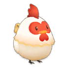 Gallina |
 Huevo  Huevo + |
2.000 G | Domesticandolo en estado salvaje. |
 Gallina sedoso |
 Huevo de seda  Huevo de seda + |
4.000 G | Domesticandolo en estado salvaje. |
 Vaca |
 Leche  Leche + |
3.000 G | Domesticandolo en estado salvaje. |
 Vaca marrón |
Leche Leche + |
5.000 G | Domesticandolo en estado salvaje. |
| 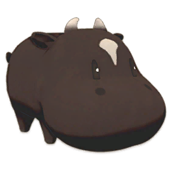 Vaca negra |
Leche Leche + |
10.000 G | Despues de llegar al nivel 5 en la habilidad de Cuidado de animales. |
 Búfala |
 Leche de búfala  Leche de búfala + |
6.000 G | Domesticandolo en estado salvaje. |
 Cabra |
 Leche  Leche de cabra + |
4.000 G | Domesticandolo en estado salvaje. |
 Cabra alpina |
Leche Leche de cabra + |
6.000 G | Domesticandolo en estado salvaje. |
 Oveja |
 Lana de oveja  Lana de oveja + |
3.000 G | Domesticandolo en estado salvaje. |
 Oveja de Suffolk |
 Lana de oveja suffolk  Lana de oveja suffolk + |
6.000 G | Domesticandolo en estado salvaje. |
 Alpaca |
 Lana de alpaca  Lana de alpaca + |
4.000 G | Domesticandolo en estado salvaje. |
 Alpaca marrón |
 Lana de alpaca marrón  Lana de alpaca marrón + |
8.000 G | Domesticandolo en estado salvaje. |
 Conejo |
 Pelo de conejo  Pelo de conejo + |
2.000 G | Domesticandolo en estado salvaje. |
 Conejo rosa |
 Pelo de conejo rosa  Pelo de conejo rosa + |
30.000 G | Despues de llegar al nivel 5 en la habilidad de Cuidado de animales.. |
 Conejo gris |
 Pelo de conejo gris  Pelo de conejo gris + |
30.000 G | Domesticandolo en estado salvaje. |
Mascotas
La mayoría de las mascotas se desbloquearán una vez que hayas actualizado tu casa a una cabaña de troncos y hayas presenciado el evento de presentación de mascotas de Patricia. La excepción a esto es el Pequeño Lobo, que también requerirá una bendición del Santuario. Las personalidades cambian a diario, ¡así que asegúrate de revisarlas de vez en cuando para encontrar la mascota que deseas!.
| Animal | Precio | Requisito de ventas |
|---|---|---|
|
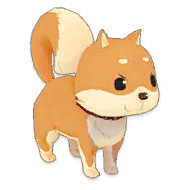
Shiba Inu  Shiba Inu negro  Shiba Inu blanco 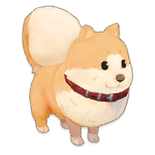
Pomeranio |
2.000 G | Su hogar ha sido actualizado a una cabaña de troncos. |
 Labrador retriever 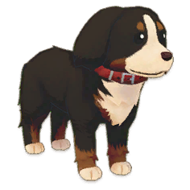
Boyero de Berna  Husky siberiano  Collie fronterizo |
3.000 G | Su hogar ha sido actualizado a una cabaña de troncos. |
|
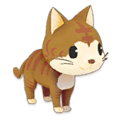
Rayas marrones  Negra  Blanca 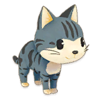
Americano  Doblez escocés  Calicó |
2.000 G | Su hogar ha sido actualizado a una cabaña de troncos. |
 Persa  Maine-coon |
3.000 G | Su hogar ha sido actualizado a una cabaña de troncos. |
| 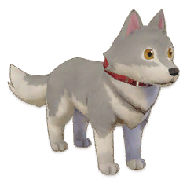 Pequeño lobo |
50.000 G | Su hogar ha sido actualizado a una cabaña de troncos y recibiendo la bendición del Santuario. |
Montura
| Animal | Precio | Requisito de ventas |
|---|---|---|
| 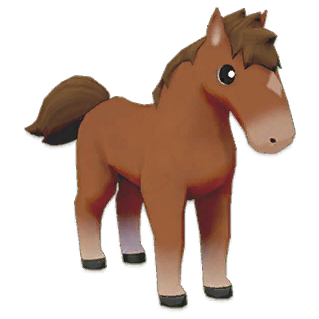 Caballo marrón |
5.000 G | Domesticandolo en estado salvaje. |
| 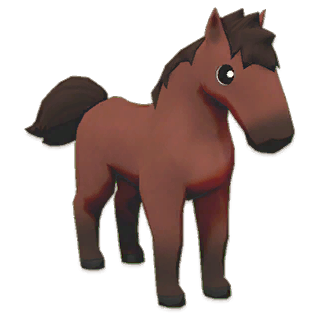 Caballo rojo |
10.000 G | Domesticandolo en estado salvaje. |
| 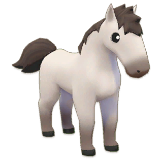 Caballo blanco |
10.000 G | Domesticandolo en estado salvaje. |
 Caballo negro |
10.000 G | Domesticandolo en estado salvaje. |
 Precioso caballo |
50.000 G | obtenido a travez de la bendición del Santuario |
 Unicornio |
100.000 G | obtenido a travez de la bendición del Santuario |
 Lobo |
100.000 G | obtenido a travez de la bendición del Santuario |